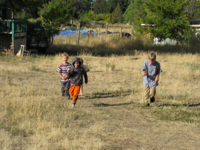

Recovered weblog entry
9/30/2008
30 days hath September. And we are nearly done.
Oh, the joys of driving to Utah overnight. We'd done it before, of course, but I think we failed to realize A. the lateness of the hour and B. Daylight Savings Time. Those two things combined against us to provide a very late (early?) arrival time of 5:00am.
My dear brother Adam provided a much needed bed for us at that point, leaving us be as the four of us huddled together for a few hours of precious shut-eye. It should be mentioned that the matron of the house kept eight small children at bay upstairs while we slept until 9:00am, surely no small task with the eldest only being 13 and the youngest a shade past six months.

Breakfast was gratefully gobbled up before a few hours of playtime. The boy took full advantage of this time and booked it outside with the youngest of the lot. They introduced him to the many offerings of the yard, including the hen house, wandering ducks and geese, and the garden. It was at the garden where Sumner found most of his simple pleasures, convincing one of his cousins to let him pluck a ripe pepper from the tender vines, which he then stuck in his pocket for safe keeping.
The wife and I spent most of this time recuperating from the long journey while chatting it up with the eldest of the children and their wonderful mother, Diedre. The wife especially appreciated this time, as she had plenty of questions for all of them, this being the very first time having visited them at their house. After a few hours, it was back on the road for another drive, this time toward Lehi and my sister's house.
The two girls were still in school when we arrived in Lehi, and being quite famished, we left immediately for some grub at Wendy's with my sister and her youngest, Noah. I don't believe ever seeing my wife finish a meal quite so quickly before. I won't pretend to be immune, I snarfed my sandwich in almost equal fervor.
This blog was not finished for an unknown reason. Go figure. I'm posting it anyway.